２００９年３月
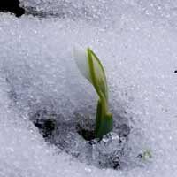 前日の桃の節句に、久しぶりに 雪が降り、翌朝 １０㎝ほど
積もりました。 陽が高くなるにつれ 雪はみるみるうちにとけ、
雪景色を楽しんだのは ほんの束の間。
しかし・・・ それと入れ替わって、ちいさな花が
芽をだしているのを みつけました。
その花の名は、スノードロップス。背丈は3～5ｃｍほど
その名の通り、
雪解け水を吸い込んでつけたような
つぼみは、”雪のしずく”のようです。
長い冬を終え、
春がきたことを知らせてくれる
春一番の花・・・
snow dropsふきのとう
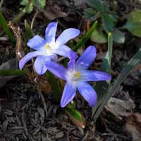 ４月
さて、今回 ひとつ気になる球根花がありました。
今年3年目になるチオノドクサです。もう芽を出していい頃なのに、
全く気配がありません。気になって、毎日 芽を探しました。
肌寒い日が続いたのが、突然 初夏の陽気になって 2日目のこと。
待望のチオノドクサの芽を みつけました！ よく見ると、すでに 葉の
間に 紫色のつぼみをつけているではないですか！
そして、翌日には もう花を ぱっと咲かせていました。
そして、チオノドクサはつぼむことなく 夜も咲き続けています。
そんなチオノドクサさんを見て、
花を咲かせるときをじっくり慎重に 選ぶのかしら・・・
と 思ったのでした。
今、 初夏のような陽射しのなかで のびのびと 花を咲かせています。
４月
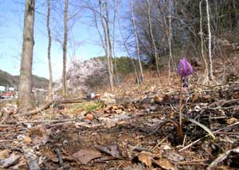
自然が好きで、のんびり山歩きをしている頃がありました。山で出会う花々が好きです。ひそっりと けなげに咲く花、群落を作る力のある花、自然の織り成す風景は 素晴らしく、いつも ドキドキわくわくしていました。
里山に住むようになって、すっかり山から足が遠のいてしまいましたが、いつも 気になるのは 山野草で、ちいさな花が好きです。
ただ 庭仕事をするようになって、暮らしの中に 木々や花々がいることの幸せを感じています。 種をまいたり、マルチングをしたりと、手をかけることで 植物が ぐっと身近な存在になりました。
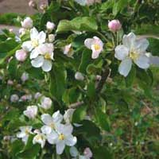
２００９年５月
これは、姫りんごの花。植樹して 3年目。
まだ、実をつけたことはありません。
今年は、今までになく たくさんの花をつけました。
虫がつきやすいので、木酢液を定期的にかけ、腐葉土をたっぷり
根元にやり、と いろいろ 気を使っています。それでも、ときどき
あのにっくきケムシがやってくるんですけど。
今年は 実がなるかな・・・。 ちょっと期待したいところ。

５月
これは、ひとりしずかの花です。昨年、風にのって飛んだ種が
芽を出していました。
そして、今年 仲間が増え、３つの花が咲きました。
自然がつくりだす喜び。来年は、どれくらい増えるでしょう。
こんな楽しみもあるのですから、 急がず ゆっくり
庭づくりをしていきたいと思います。
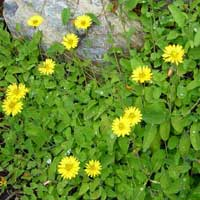
こどもの頃の思い出 ５/２４
私は こどもの頃、特別 花好きというわけではなかったのですが、
記憶の中に 花にまつわるものが いくつかあります。
そのひとつが、このジシバリです。
こどものころ、私は 野や道端に咲く花を よく摘んでいました。
たんぽぽではなく、レモン色したジシバリのこの色が 好きで、
いつものように摘んでいたときのことです。
後ろから、 「きれいな花ね。」と 声がかかりました。
振り返ると、知らないおばさんが にこにこして 立っていました。
「その花、おばさんにも ひとつちょうだい」。
そう言われて、 摘んだレモン色のジシバリを一本
おばさんに手渡した・・・という思い出です。
レモン色のこの花をみると、花を摘んでいる小学生の私を思い出し、
我庭では 雑草のジシバリは 大切に 保護されています。
５月
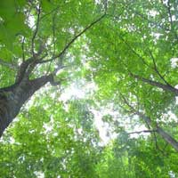我家の周辺の山々は、昔 マツタケがとれたということで 赤松の多い 味気ない山が多いです。
しかし、我家の裏山にある小さい雑木林は 赤松とカラマツを伐採して、落葉樹の森を目指しています。
もとからあるのは、栗、コナラ、ヤマザクラなどで、この5月 小さい白い花を咲かせる木々があります。
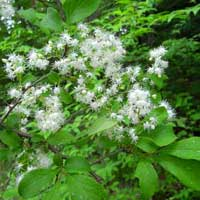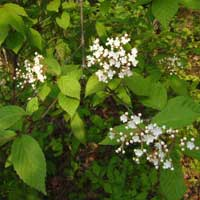
そして、この山の雰囲気に合うように、あたらしい木を選び、苗木を植えていっています。
どの木を植えようか・・選ぶのは、楽しいことです。
木の高さは？ 花は？紅葉は？どの場所に？・・・
いろいろ考えながら、何度も 木の図鑑をめくり、イメージを広げてみます。いくつか 候補を挙げ、しっかり 名前をメモして、いきつけの植木屋さんへ。
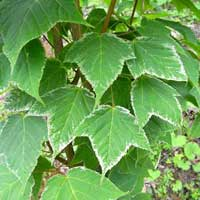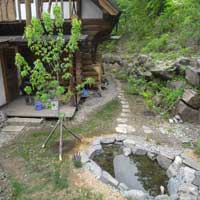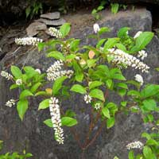
お目当てのものをたずねる・・・
はずだったのですが・・・
行ってみたら、
なんだか気になるものが目に入り、
予定外のものを 手にして帰る・・・
ってことも、
結構 あります。
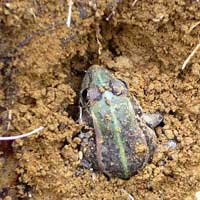 ５月
昨年の秋につけた野沢菜が 発酵しずぎて 口にできなくなったので、
ごめんなさいして土に埋めました。
そうしたら、四足の誰か（猫か猪）が 匂いをかぎつけて掘った形跡がありました。
ところが、野沢菜だと気づいて、途中でやめた様子。
ちいさな穴を埋めようとしたところ、かえるくんがいるのに気がつきました。
どうやら、冬眠していたようです。
四足に みつからなくて よかったね。
田んぼに 水が張られると、夜は かえるの大合唱。
庭先でも あちこちで、かえるくんが ぴょんぴょん はねてるのを みかけます。
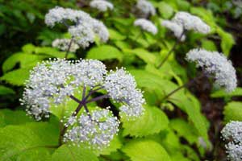
２００９年６月
木々の緑が色濃くなる６月。 ちいさな雑木林では、
半ばを過ぎると コアジサイの群落が 花を咲かせ始めます。
写真でおわかりになるように ちいさな花が くしゅくしゅと集まったような かわいらしい花で、
花を支える枝が ムラサキなところが おしゃれです。
ほんのりいい香りもします。
コアジサイが咲きそろうと 緑の中に 白い花々が浮き上がって、それは 見事です。
６月
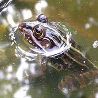 昨年の秋、ちいさな池をつくりました。
冬には氷が張り、静かに眠っていた池ですが、春が来て、氷が溶けると、
生き物がやってくるようになりました。
まずは、前足のおおきいタガメ。ホオジロが水浴びをしているのもみかけましたよ。
そして、おたまじゃくしに ちょっと 目のよったおおきなかえる。体の色は、茶色っぽく背中に
緑のラインがはいっています。午前中は 石の上で よく ひなたぼっこをしています。
池がちいさいので、かえるくんの行動が始終 観察でき、なかなか 楽しいです。
見事な かえる泳ぎにほれぼれしたり、ちゃぽんと 水にとびこむ音が 耳に心地よく響いてきたり、
今日は どうしてるかな？・・・と 毎日 気にしています。
かえるくんの方も、居心地がよいみたいで、今では６匹に増え、我家の池は かえるくんの
楽園になっています。 これからも どうぞよろしく。
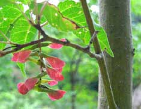
７月１０日、午後６時過ぎ ひぐらしの初鳴きを耳にしました。
このかなかなという声を聞くと、夏がきたなぁ・・・と思います。
ひぐらしの鳴く森で カエデの実をみつけました。